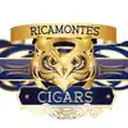

Ricamontes Cigars · El Búho
Brand / artisan cigar maker · Aguas Buenas, Puerto Rico
Ricamontes Cigars · El Búho appears in La Hoja Boricua, the guide to cigars by Puerto Rican artisans, with 1 cigar in the catalog.

Brand / artisan cigar maker · Aguas Buenas, Puerto Rico
Ricamontes Cigars · El Búho appears in La Hoja Boricua, the guide to cigars by Puerto Rican artisans, with 1 cigar in the catalog.